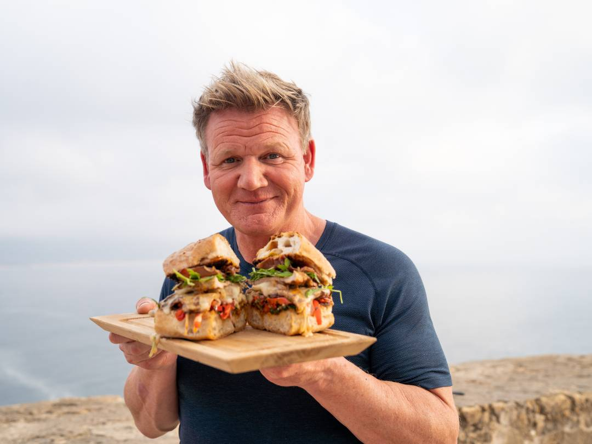
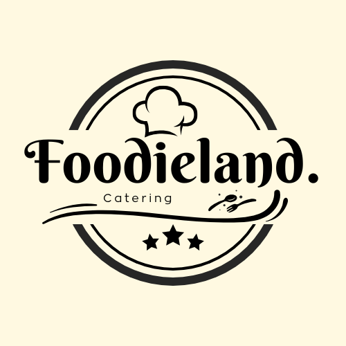
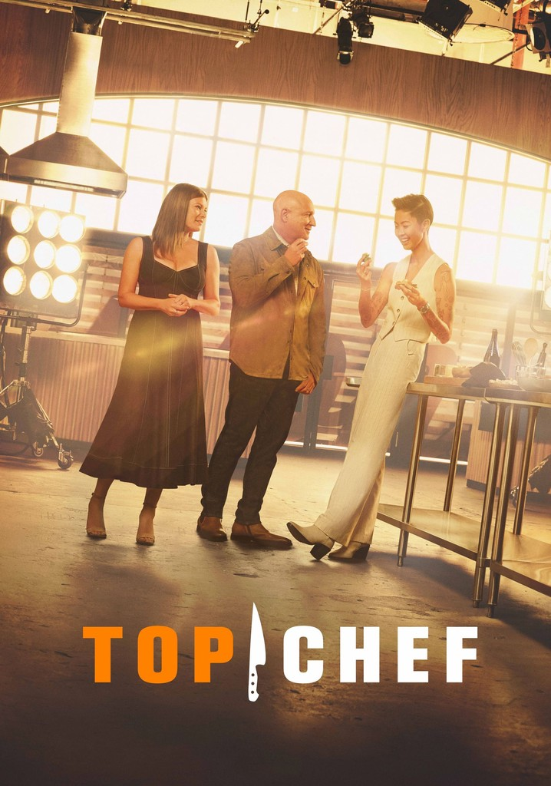

FoodieLand is a modern, user-friendly web application crafted for food enthusiasts and home chefs to explore, create, and share recipes. Built using HTML, CSS, Bootstrap, and JavaScript, the platform offers a seamless and interactive experience, featuring a clean and responsive design tailored to enhance your culinary journey.
📚 Project Overview
This project was developed as part of the Web Development course under the mentorship of Dr. Ashraf Abdel Aziz at the Information Technology Department, Borg El Arab University.

✨Our Mission
At FoodieLand, we are driven by passion and innovation. Our goal is to provide a platform for food lovers to explore new recipes, share their creations, and unleash their inner chefs. Leveraging modern technologies such as artificial intelligence, automation, and smart systems, we aim to redefine the way people experience and interact with food.

📖Our Story
FoodieLand started with a simple idea: to bring food enthusiasts and home chefs together on a single platform.
We believe that cooking is more than just preparing meals; it's about creating moments, sharing experiences, and expressing creativity.
With a passionate team and a love for technology, we set out to design a modern, user-friendly platform where people can
explore recipes, share their culinary masterpieces, and learn from one another. Whether you're a beginner or an expert chef,
FoodieLand is here to inspire your next great dish.

Join Our Community
Subscribe to our newsletter for the latest recipes!
Join us on a journey to build a smarter, more efficient future, one recipe at a time!